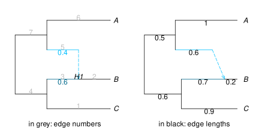

polygenic traits
We can now simulate traits controlled by loci that evolve according to the coalescent.
simulate_polygenictrait simulates polygenic traits, controlled by multiple loci, whose effects on the trait are additive, that is: $X = (Y_1+...+ Y_L)/\sqrt{L}$ for a trait X controlled by L loci. The same process is used independently across all loci, but the effect of each locus evolves under its own gene tree. For a given gene tree and locus, this process is as follows:
- At the root population, each ancestor of the locus that has not coalesced has its effect independently drawn from a common "root" distribution
P0_distribution. - Along each each of the gene tree, the locus effect evolves down the tree according to some "transition" distribution
transition_distribution_family(y0,t), wherey0is the effect value at the beginning of the branch, andtthe length of the branch, in coalescent units.
The function takes as input a phylogenetic network, and simulates the gene tree for each locus using simulatecoalescent.
The documentation for simulate_polygenictrait shows two examples. The first one has a normal distribution Normal(0, √v) at the root of the species phylogeny and normal transition probabilities Normal(y0, σ*√t) (like a Brownian motion) for each locus on its gene tree. The other example shows 0/1 binary traits (e.g. major/minor allele) with a Markov transition probability.
The example below shows how to build a compound Poisson process, to model a mutational model for each locus. Under this model, the effect of each locus stays constant until a mutation affects the locus. Mutations occur with a Poisson process at some rate. At each mutation, the locus effect changes by some value (mutational effect) drawn from some distribution.
We build such a process below, from which we can draw samples along one edge of a gene tree.
using Distributions, Random
import Distributions: rand
"""
CompoundPoissonGaussian(m, μ, σ)
Compound Poisson distribution with Gaussian-distributed effects.
`m` is the mean, or the starting value for the process.
`μ` is the average number of mutations, sampled from a Poisson distribution.
`σ` is the standard deviation of each mutation effect, sampled from a
Gaussian distribution (of mean 0, standard deviation `σ`).
Example: we may define `d = CompoundPoissonGaussian(3, 0.6, 1)`
for the evolution of a locus effect starting at value 3,
evolving along an edge whose length predicts 0.6 mutations,
and with a standard deviation of 1 for each mutation effect.
Then we can sample the locus effect value at the end of the edge as: `rand(d)`.
We could also draw 4 samples, say, with `rand(d, 4)`.
"""
struct CompoundPoissonGaussian <: Sampleable{Univariate,Continuous}
"mean"
m::Float64
"mean number of events, sampled from Poisson(μ)"
μ::Float64
"standard deviation of each event effect, sampled from Normal(0,σ)"
σ::Float64
end
function rand(rng::AbstractRNG, s::CompoundPoissonGaussian)
n = rand(rng, Poisson(s.μ)) # number of mutations
return s.m + sum(rand(rng, Normal(0,s.σ), n))
endWe can now use this transition distribution to simulate a polygenic trait under a mutational process. We use the same network as used earlier.
net = readnewick("((C:0.9,(B:0.2)#H1:0.7::0.6)i1:0.6,(#H1:0.6::0.4,A:1.0)i2:0.5)i3;");
Next we pick parameters: μ=1.5 mutations per coalescent unit (aka, per 2N generations where 2N is the haploid effective population size), σ=2 for the mutation effects, and the equilibrium variance at the root population: μσ².
julia> μ=1.5; σ=2; rootdist = Normal(0, sqrt(μ)*σ);julia> transition(y0, len) = CompoundPoissonGaussian(y0, μ*len, σ);
Note that the mutation rate μ*len on each branch is scaled by the length of the branch.
Finally, we simulate 2 replicates of the process, using L=4 loci, and 2 individuals in each population at the tips:
julia> x,lab,gt = simulate_polygenictrait(net, 2, 4, rootdist, transition; nindividuals=2);julia> lab6-element Vector{String}: "C_1" "C_2" "B_1" "B_2" "A_1" "A_2"
The trait values in x come in the same order as in the labels lab.
julia> using DataFramesjulia> pop = replace.(lab, r"_\d+$" => "")6-element Vector{String}: "C" "C" "B" "B" "A" "A"julia> DataFrame(individual=lab, population=pop, rep1=x[1][:], rep2=x[2][:])6×4 DataFrame Row │ individual population rep1 rep2 │ String String Float64 Float64 ─────┼─────────────────────────────────────────────── 1 │ C_1 C -0.129657 0.417796 2 │ C_2 C 4.54792 1.42214 3 │ B_1 B -1.1363 -0.0849093 4 │ B_2 B -0.387952 1.50625 5 │ A_1 A -2.47713 -0.315764 6 │ A_2 A -2.50649 -5.49423
The simulated gene trees are also returned for possible downstream use. The L=4 gene trees from the first replicate are listed first, the L trees used for the second replicate listed next, etc.
julia> length(gt) # 8 gene trees: 4 for replicate 1, then 4 for replicate 28julia> writenewick(gt[1], round=true)"((((B_2:0.2)H1:0.6)i2:0.5)i3:0.846,(((((C_1:0.061,C_2:0.061):0.839)i1:0.448,((B_1:0.2)H1:0.7)i1:0.448):0.152)i3:0.788,(((A_2:1.0)i2:0.189,(A_1:1.0)i2:0.189):0.311)i3:0.788):0.058);"
If one does not wish to save the gene trees, one can use the julia syntax shown below (with the dash), so that memory holding gene trees can be recycled sooner:
x,lab,_ = simulate_polygenictrait(...);